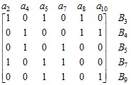

электронный
ресурс по учебной дисциплине
1-40 02 01 «Вычислительные машины, системы и сети»
|
||
| Оглавление | Программа | Теория | Практика | Контроль знаний | Об авторах | ||
Г л а в а 10
Комбинаторные задачи и методы комбинаторного поиска
Можно выделить три типа комбинаторных задач: задачи подсчета числа конфигураций определенного вида; перечислительные задачи, в результате решения которых получаются все конструкции определенного вида (например, получение всех независимых множеств графа); оптимизационные комбинаторные задачи, решением любой из которых является конструкция, обладающая оптимальным значением некоторого параметра среди всех конструкций данного вида (например, раскраска графа минимальным количеством цветов).
10.1. Задачи подсчета
Рассмотрим простейшие задачи подсчета.
Число размещений U(m, n) показывает, сколькими способами можно разместить п предметов по т ящикам. Для каждого из п предметов имеется т вариантов размещения. Следовательно,
U(m, n) = тп.
Числом перестановок Р(п) является число различных последовательностей, которые можно составить из п предметов. В последовательности всего п позиций. Зафиксируем один предмет. Его можно разместить в одну из п позиций, т. е. имеем п вариантов размещения. Для следующего предмета имеется п – 1 вариантов размещения по незанятым позициям и т. д. Таким образом,
Р(n) = п · (п – 1) · … · 2 · 1 = п!.
Число размещений без повторений А(m, n) представляет собой число способов размещения п предметов по т ящикам не более чем по одному в ящик (при этом считается, что m ≥ n). Путем рассуждений, подобных предыдущим, получим
Число сочетаний С(m, n) показывает, сколькими способами из т предметов можно выбрать п предметов. В данном случае не важно, в каком порядке эти предметы выбираются, поэтому
10.2. Особенности комбинаторных задач
Примерами оптимизационных комбинаторных задач, решение которых предполагает комбинаторный поиск, являются рассмотренные нами в предыдущих разделах поиск наибольшего независимого и наименьшего доминирующего множеств, раскраска графа.
В отличие от задач традиционной математики, где решение получается с помощью целенаправленной вычислительной процедуры, однозначно ведущей к цели, решение комбинаторной задачи сводится зачастую к полному перебору различных вариантов. Перебираются и испытываются конструкции определенного вида, среди которых должно находиться решение задачи. Как только выясняется, что очередная конструкция является решением, процесс поиска решения можно считать завершенным.
В традиционной математике трудоемкость задачи обычно не очень сильно зависит от размера области возможных решений, в то время как для комбинаторных задач эта зависимость весьма велика.
Комбинаторные задачи характерны еще тем, что множество, среди элементов которого отыскивается решение, всегда конечно. Реализовав полный перебор, либо найдем решение, либо убедимся в том, что решения нет. Таким образом, всякая подобная задача может быть решена за конечное время. Однако это не значит, что она может быть решена за практически приемлемое время даже с помощью самой быстродействующей вычислительной машины.
10.3. Вычислительная сложность
Трудоемкость алгоритма, или временнáя сложность, т. е. время, затрачиваемое на выполнение алгоритма, оценивается числом условных элементарных операций, которые необходимо выполнить при решении задачи. Естественно, эта величина зависит от объема исходных данных, который оценивается некоторым параметром. Например, для графа это может быть число вершин или число ребер. Трудоемкость алгоритма, таким образом, можно оценить некоторой функцией f(n), где п – натуральное число, выражающее объем исходных данных.
Принято писать f(n) = O(g(n)), где g(n) − некоторая конкретная функция от n, если найдется такая константа с, что f(n) ≤ сg(n) для любого n ≥ 0. При этом употребляют такие выражения: «трудоемкость алгоритма есть O(g(n))» или «алгоритм решает задачу за время O(g(n))». Если трудоемкость не зависит от объема исходных данных, то для ее обозначения используется символ О(1). Алгоритм трудоемкости О(п) называют линейным. Алгоритм трудоемкости О(пb), где b – константа (возможно, дробная), называется полиномиальным. Если g(n) является показательной функцией, например 2п, то говорят, что алгоритм обладает неполиномиальной, или экспоненциальной, сложностью.
Оценка трудоемкости алгоритма позволяет судить о том, как влияет быстродействие вычислительной машины на время выполнения алгоритма. Пусть имеется пять алгоритмов, трудоемкость которых соответственно п, n logn, п2, п3 и 2п. Пусть условная элементарная операция, которая является единицей измерения трудоемкости алгоритма, выполняется за одну миллисекунду. В табл. 10.1, заимствованной из работы [1], показано, какого размера задачи могут быть решены каждым из этих алгоритмов за одну секунду, одну минуту и один час. Из этой таблицы видно, например, что за одну минуту алгоритм с трудоемкостью п2 решает задачу в шесть раз большую, чем алгоритм с трудоемкостью п3.
Следует, однако, иметь в виду, что трудоемкость, выражаемая большей степенью полинома, может иметь меньший множитель с из приведенного выше неравенства f(n) ≤ сg(n). Точно так же сложность алгоритма, которая носит экспоненциальный характер, может иметь множитель, меньший, чем у полиномиальной сложности. При разработке компьютерных программ для решения практических задач важно знать, при каких значениях параметра п время выполнения экспоненциального алгоритма оказывается меньше, чем время выполнения полиномиального алгоритма, решающего ту же задачу.
Таблица 10.1
Связь трудоемкости алгоритма с максимальным размером
задачи, решаемой за единицу времени
Временнáя |
Максимальный размер задачи |
||
сложность |
1 с |
1 мин |
1 ч |
п |
1000 |
6 × 104 |
3,6 × 106 |
п logn |
140 |
4893 |
2,0 × 105 |
n2 |
31 |
244 |
1897 |
n3 |
10 |
39 |
153 |
2n |
9 |
15 |
21 |
Для очень многих практических комбинаторных задач существуют алгоритмы только экспоненциальной трудоемкости. Может показаться, что с совершенствованием вычислительной техники и ростом быстродействия вычислительных машин проблема трудоемкости ослабевает. Однако данные, приведенные в табл. 10.2 [1], говорят, что это не так. Пусть следующее поколение вычислительных машин будет иметь быстродействие, в десять раз большее, чем у современных вычислительных машин. В табл. 10.2 показано, как благодаря увеличению быстродействия возрастут размеры задач, которые могут быть решены за некоторую фиксированную единицу времени. Задачи достаточно большого размера, решаемые только алгоритмами экспоненциальной трудоемкости, вообще не могут быть решены за практически приемлемое время, даже если надеяться на существенное увеличение быстродействия вычислительных машин в будущем.
Таблица 10.2
Связь размера задачи, решаемой за заданное время,
с быстродействием вычислительной машины
Временнáя |
Максимальный размер задачи |
|
сложность |
до ускорения |
после ускорения |
п |
s1 |
10 s1 |
п logn |
s2 |
≈ 10 s2 |
n2 |
s3 |
3,16 s3 |
n3 |
s4 |
2,15 s4 |
2n |
s5 |
s5 + 3,3 |
Иногда удается найти способы сокращения перебора благодаря некоторым особенностям конкретных исходных данных.
Другой путь выхода из такого положения – использование приближенных методов. Для практических задач не всегда требуется получать точное решение. Часто достаточно иметь решение, близкое к оптимальному. Пример приближенного метода рассмотрен нами ранее при решении задачи раскраски графа.
10.4. Методы комбинаторного поиска
Один из наиболее общих и плодотворных подходов к решению комбинаторных задач заключается в применении дерева поиска. В дереве выделяется вершина, которая называется корнем дерева и которая ставится в соответствие исходной ситуации в процессе решения задачи. Остальные вершины сопоставляются с ситуациями, которые можно достичь в данном процессе. Выделение корня придает дереву ориентацию, при которой все пути ведут из корня в остальные вершины. Дуги дерева соответствуют некоторым простым операциям, представляющим шаги процесса решения, и связывают вершины, соответствующие ситуациям, одна из которых преобразуется в другую в результате выполнения шага. Для ситуации характерно разнообразие вариантов выбора очередного шага, представленных дугами, исходящими из соответствующей вершины. Некоторые ситуации соответствуют решениям.
Дерево поиска не задается априори, а строится в процессе поиска: когда возникает некоторая ситуация, тогда и определяются возможные направления процесса, которые представляются исходящими из вершины дугами. Естественным является стремление сокращать число этих дуг, чтобы быстрее найти решение. Способы этого сокращения строятся с учетом особенностей конкретных задач.
Довольно общим средством повышения эффективности процесса решения задачи является редуцирование, т. е. упрощение текущей ситуации, сокращающее объем вычислений, проводимых при анализе множества вытекающих из нее вариантов. Способы редуцирования определяются особенностями конкретной задачи и исходных данных.
Процедуру комбинаторного поиска удобно проследить на примере решения задачи о кратчайшем покрытии, которую рассмотрим в следующем разделе.
Г л а в а 11
Задача о кратчайшем покрытии
11.1. Постановка задачи
Многие комбинаторные оптимизационные задачи сводятся к задаче о кратчайшем покрытии, которая ставится следующим образом. Пусть даны некоторое множество А = {a1, a2, …, an} и совокупность его подмножеств В1, В2, …, Вт, т. е. Bi ⊆ A, i = 1, 2, …, m, причем В1 ∪ В2 ∪ … ∪ Вт = А. Требуется среди данных подмножеств выделить такую совокупность Bj1,Bj2, ... , Bjk с минимальным k, чтобы каждый элемент из
Одной из интерпретаций этой задачи является задача о переводчиках. Из некоторого коллектива переводчиков, число которых т и каждый из которых владеет несколькими определенными языками, требуется скомплектовать минимальную по числу членов группу, такую, чтобы она смогла обеспечить перевод с любого из заданного множества языков, число которых п. Здесь А – множество языков, перевод с которых требуется обеспечить, а Вi – множество языков, которыми владеет i-й переводчик.
Удобно рассматривать матричную формулировку данной задачи, при которой совокупность В1, В2, …, Вт задается в виде булевой матрицы, строки которой соответствуют подмножествам из данной совокупности, а столбцы – элементам множества А. Элемент i-й строки и j-го столбца имеет значение 1, если и только если aj ∈ Bi. В этом случае говорят, что i-я строка покрывает j-й столбец. Требуется найти такое множество строк данной матрицы, чтобы каждый ее столбец имел единицу хотя бы в одной строке из этого множества, и при этом мощность выбранного множества должна быть минимальной.
11.2. Приближенные методы решения задачи
Существуют приближенные методы решения данной задачи. Например, ее можно решать с помощью жадного алгоритма, представляющего собой многошаговый процесс, где на каждом шаге выбирается и включается в покрытие строка заданной матрицы, покрывающая наибольшее число из еще не покрытых столбцов. Этот процесс заканчивается, когда все столбцы матрицы оказываются покрытыми. Применение жадного алгоритма иногда дает точное решение, но гарантии этому нет. Например, если задана матрица
,
первой для включения в формируемое решение жадный алгоритм выберет строку В1, после чего для покрытия оставшихся столбцов должны быть включены в решение обе строки В2 и В3. Кратчайшее же покрытие данной матрицы составляют только две строки – В2 и В3.
Более близкое к кратчайшему покрытие получается чаще всего с помощью «минимаксного» алгоритма. Он представляет собой многошаговый процесс, на каждом шаге которого выбирается столбец с минимальным числом единиц и из покрывающих его строк для включения в решение выбирается та, которая покрывает максимальное число непокрытых столбцов. Пусть, например, задана матрица
.
Одним из столбцов с минимальным числом единиц является столбец а6. Из покрывающих его строк максимальное число столбцов покрывает строка В6. Включим эту строку в решение и удалим ее и столбцы, которые она покрывает, в результате чего получим
 .
.
Из оставшихся столбцов минимальное число единиц имеет столбец а10. Покрывающие его строки В4 и В9 имеют одинаковое число единиц, т. е. одинаковое число покрываемых ими, но еще не покрытых столбцов. Включаем в решение первую по порядку строку В4 и получаем матрицу
.
В полученной матрице столбцом с минимальным числом единиц является столбец а2, а из покрывающих его строк строка В7 имеет максимальное число единиц. Включение этой строки в решение завершает процесс, в результате которого полученным покрытием является {B4, B6, B7}. Как будет показано ниже, это решение является точным.
11.3. Точный метод
Точный метод нахождения кратчайшего покрытия представляет собой обход дерева поиска. Текущая ситуация, соответствующая некоторой вершине дерева поиска, представляется переменной матрицей Х, которая показывает, какие столбцы еще не покрыты и какие строки можно использовать для их покрытия. В этой ситуации выбирается первый из столбцов с минимальным числом единиц – так минимизируется число вариантов продолжения поиска. Очередной шаг процесса состоит в выборе покрывающей строки для этого столбца и пробном включении ее в получаемое решение. Таким образом, вершины дерева поиска соответствуют некоторым столбцам исходной матрицы, а дуги – выбираемым для их покрытия строкам.
Начальное значение матрицы Х совпадает с исходной матрицей. Последующие значения получаются удалением строк, включаемых в решение, и столбцов, покрытых этими строками. Кроме того, выполняются следующие правила редукции.
1. Если столбец k имеет единицы везде, где имеет единицы столбец l, то столбец k можно удалить. Любая строка, покрывающая столбец l, покрывает также столбец k. Поэтому при поиске покрытия столбец k можно не рассматривать. Достаточно, чтобы в покрытие была включена какая-либо из строк, покрывающих столбец l.
2. Если строка i имеет единицы везде, где имеет единицы строка j, то строку j можно удалить. Действительно, пусть в некотором кратчайшем покрытии имеется строка j. Очевидно, данное покрытие останется кратчайшим, если в нем строку j заменить строкой i.
Продемонстрируем описанный процесс на матрице из предыдущего примера:
 .
.
На первом шаге выбираем столбец а6, содержащий две единицы. Среди покрывающих ее строк выбираем такую, которая покрывает наибольшее число столбцов. Такой строкой является строка В6. Удалив эту строку и покрываемые ею столбцы, получим следующее значение матрицы X:
.
После удаления строк В1, В2 и В8 согласно второму правилу редукции матрица Х будет иметь следующий вид:
.
Одним из столбцов, обладающих минимальным числом единиц, является столбец а2. Обе покрывающие его строки В3 и В7 содержат по три единицы. Выбираем первую по порядку строку В3 и включаем ее в формируемое покрытие. Теперь имеем множество {B3, B6}. Этот шаг приводит к матрице
.
После удаления строки В7 по второму правилу редукции получим матрицу, каждая строка и каждый столбец которой содержат ровно две единицы. Выбрав строку В4, покрывающую столбец а4, и проведя аналогичные преобразования, получим матрицу с одним столбцом а7 и двумя строками В5 и В9, любая из которых покрывает оставшийся столбец. Таким образом, получено покрытие {В3, В4, B5, В6}, но пройдена пока только одна ветвь дерева поиска, и до совершения полного обхода дерева неизвестно, является ли это покрытие кратчайшим.
Возвращаемся к ситуации, когда очередным столбцом для покрытия взят а2. Теперь вместо строки В3 возьмем для покрытия столбца а2 строку В7. Действуя дальше аналогичным образом, получаем очередное покрытие {В4, B6, В7}, которое вытесняет предыдущее, так как оно оказалось лучше, однако и его пока нельзя назвать кратчайшим.
Рис. 11.1. Дерево поиска кратчайшего покрытия
Возвратившись к начальной вершине дерева поиска и следуя по дуге, соответствующей строке В2, убеждаемся, что длина покрытия не может быть меньше трех. На этом поиск можно закончить и выдать в качестве решения множество {В4, B6, В7}. На дереве поиска, обход которого совершался в процессе решения данного примера (рис. 11.1), вершинам приписаны столбцы, а дугам – строки.
| (С) БГУИР |